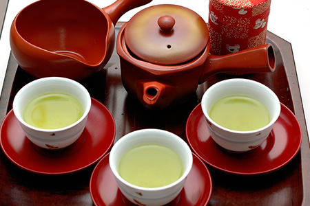

お茶の入れ方
緑茶の入れ方

紅茶の入れ方
緑茶の入れ方
1.沸騰したお湯を茶碗に八分目まで注ぎ、冷まします。湯冷ましを使用する場合もあります。
2.適量の茶葉を急須に入れます。目安：３人で６ｇ。
3.湯冷ましした茶碗のお湯を急須に注ぎ、６０秒位（深蒸し茶は３０秒）お茶が侵出するのを待ちます。
お湯の温度は70度～80度が目安。
4.少量ずつ茶碗に注ぎます。数人分注ぎ分ける時は、少量ずつ注ぎ分け、味を均等にします。
5.最後の一滴までしっかり注ぎ切るようにします。
急須にお湯が残っていると、お茶の成分が浸出し、二、三煎目がおいしくなくなります。
二、三煎目はお湯を入れてから30秒位待ちます。
紅茶の入れ方
1.やかんに汲みたての水を入れて、火にかけ沸騰させます。5円玉くらいの泡がボコボコ出ている状態が目安です。
2.紅茶をいれる前に、まずポットとカップにお湯を注ぎ、全体を温めておきましょう。
3.温めたポットに、ティースプーン1杯（2～3g）を１人分として、人数分の茶葉を入れます。細かい茶葉は中盛、大きい茶葉は大盛にするのが目安です。
4.沸騰したてのお湯を人数分注ぎ、すぐにフタをして蒸らして下さい。この時、沸騰したお湯を勢いよく注ぐのがコツ。（1杯分150～160mlが目安）
5.蒸らす時間は、細かい茶葉は2分半～3分、大きい茶葉は3～4分が目安です。（ミルクティーのときは、やや長めに）その間ポットにティーコジーやティーマットを使うとさらに保温効果が上がります。
※おいしい紅茶をいれるには、温度を下げないことがポイント。
6.ポットの中を、スプーンで軽くひとまぜ。
7.茶こしで茶ガラをこしながら、濃さが均一になるようにまわし注ぎしましょう。“ベスト・ドロップ”と呼ばれる最後の一滴まで注いでください。